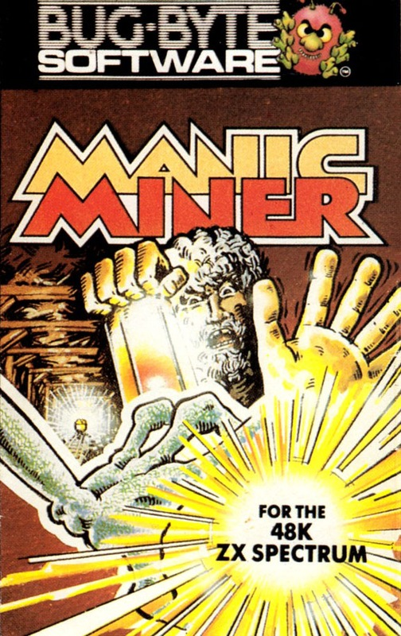
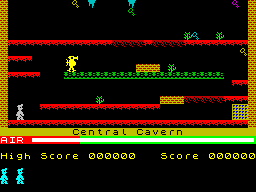
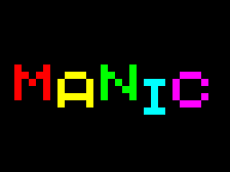

Manic Miner


{kind=link}

| Publisher: | Bug-Byte / Software Projects |
| Price: | £5.95 |
| Year: | 1983 |
| Source: | CRASH, Issue 64 |

Manic Miner was released too early on to get a CRASH review, we do however have this short snippet from CRASH issue 64 in a section called Oldies.
Manic Miner must be one of the only rerelease games that has never been reviewed in CRASH. This occurred not because the lads couldn't be bothered, but because this classic platforms-and-ladders game appeared before your fave mag hit the streets. Miner Willy is the star and it is his job to travel the underground caverns of Surbiton (!!) and collect the treasure which lies therein. There are around twenty screens to go through, and all the treasure has to be collected on a screen before you progress to the next. Opposing your progress are such bizarre opponents as penguins, performing seals, dancing rabbits and kangaroos. And there's a time limit too.


Although Manic Miner is one of the oldest games to be re-released, it's also one of the best. The graphics are sharp and attractive, the ingame tune attractive and playability as addictive as it's frustrating. This is an essential purchase.
Then: N/A
Now: 92%